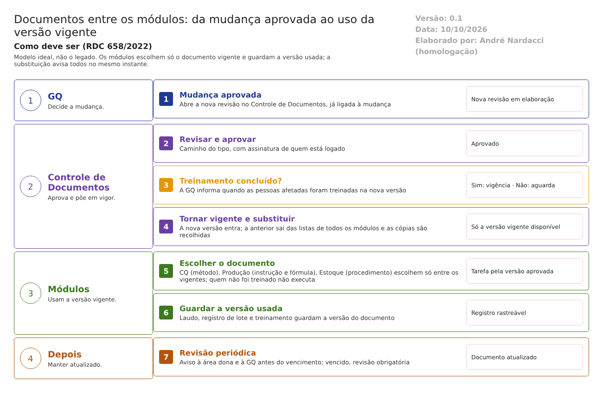

O ideal entre os módulos. Como o documento vigente deve circular pelo ERP para que cada módulo trabalhe pela versão aprovada. Complementa doc-ideal.md (o módulo por dentro) e segue o mesmo padrão de modelo-ideal/01-qualidade-entre-modulos.md, que trata da situação do lote. Versão 0.1, de 10/10/2026, para validação com a Garantia da Qualidade.
1. O princípio
Quem executa uma tarefa regulada usa a versão vigente do documento, e o registro guarda qual versão foi usada. Isso vale para o método de análise no CQ, para a instrução e a fórmula na Produção, para o procedimento de recebimento no Estoque e para o treinamento na GQ (RDC 658/2022, arts. 119 e 121).
No modelo ideal, os módulos não copiam o documento nem digitam o seu código. Eles escolhem o documento numa lista que só mostra o que está vigente, e guardam a ligação com a versão. Quando o Controle de Documentos substitui ou obsoleta uma versão, ela some das escolhas de todos no mesmo instante.

2. Como é hoje (legado)
Levantado no código (transversal/04-mapa-de-integracoes.md):
| Módulo | Usa documentos do Controle de Documentos? | Como |
|---|---|---|
| Garantia da Qualidade | Sim, no treinamento | O treinamento guarda o documento (POP) ligado a ele e consulta o Controle de Documentos pelo código. O Controle de Documentos consulta na GQ as turmas concluídas, mas a conferência antes da vigência está desligada |
| Principal | Sim, para avisos | O Controle de Documentos envia avisos de aprovação e vencimento à central de notificações. A rotina noturna que consultaria a situação dos documentos depende de uma rota que está desligada (a confirmar) |
| Controle da Qualidade | Não | O método de análise é texto livre na regra de análise |
| Estoque | Não | Nenhuma ligação encontrada no código |
| Produção, Comercial, Rastreabilidade, OPE | Não encontrado no código | A confirmar quando cada módulo for analisado |
| Mudança (GQ) | Não | A nova revisão nasce livre, sem ligação com uma mudança aprovada |
Leitura: hoje o Controle de Documentos é quase uma ilha. Só a GQ (treinamento) e o Principal (avisos) conversam com ele. Os módulos que executam as tarefas não sabem qual versão está vigente.
3. As travas documentais
Trava = o que o sistema impede ou faz sozinho, sem depender de alguém lembrar.
| # | Trava | Referência | Quem exerce | Como deve funcionar |
|---|---|---|---|---|
| 1 | Só a versão vigente é escolhida | Art. 121, parágrafo único | Controle de Documentos | CQ (método), Produção (instrução e fórmula), Estoque e GQ (procedimento do treinamento) escolhem numa lista que só mostra documentos vigentes. Substituído e obsoleto saem da lista no mesmo instante |
| 2 | O registro guarda a versão usada | Art. 119 | Cada módulo | O laudo guarda a versão do método; o registro de lote, a versão da instrução e da fórmula; o treinamento, a versão do procedimento. Ao reabrir um registro antigo, aparece a versão que valia na época |
| 3 | Nova revisão só por mudança aprovada | Art. 8º, XII | GQ | A mudança aprovada abre a nova revisão já ligada a ela. Quando a revisão fica vigente, a ação da mudança é dada como feita (trava 8 do documento 01) |
| 4 | Treinamento antes de valer e antes de executar | Art. 39 | GQ | O documento só fica vigente com o treinamento concluído, quando o tipo exige. Quem não foi treinado na versão vigente não executa a etapa no CQ nem na Produção (trava 6 do documento 01) |
| 5 | Substituição avisa e recolhe | Art. 118 | Controle de Documentos | Ao substituir ou obsoletar, o sistema avisa os módulos e os setores que usam o documento e pede o recolhimento das cópias em papel, até a baixa da última |
| 6 | Revisão periódica vencida é cobrada | Art. 121 | Controle de Documentos | Aviso antes do vencimento à área dona e à GQ. Vencido o prazo, o documento entra em revisão obrigatória e a GQ acompanha |
| 7 | A integração não falha em silêncio | Guia 33, 9.3.2.3 | Sistema | Se a consulta ao Controle de Documentos falhar, o módulo avisa e não deixa escolher um documento sem saber se ele está vigente (requisito 16 do documento 01) |
4. O que cada módulo recebe e envia
| Módulo | Recebe do Controle de Documentos | Envia ao Controle de Documentos | Travas |
|---|---|---|---|
| Garantia da Qualidade | Documento aprovado aguardando treinamento; documento vigente (encerra a ação da mudança); revisão periódica vencida | Mudança aprovada (abre a nova revisão); treinamento concluído das pessoas afetadas | 3, 4, 6 |
| Controle da Qualidade | Métodos e especificações vigentes, com versão; aviso de substituição | — | 1, 2, 5 |
| Produção | Instruções, fórmulas e procedimentos vigentes, com versão; aviso de substituição | — | 1, 2, 4, 5 |
| Estoque | Procedimentos vigentes (recebimento, amostragem, armazenagem) | — | 1, 5 |
| Principal | — | Avisos (aprovação, vencimento, recolhimento) à central de notificações | 5, 6 |
5. Pontos para validar com a Garantia da Qualidade
- Quais documentos cada módulo precisa escolher: método e especificação no CQ, instrução e fórmula na Produção, procedimentos no Estoque.
- Se a especificação do CQ passa a ser um documento controlado do Controle de Documentos ou continua no CQ, com versão própria.
- Se o registro de lote deve mostrar o documento vigente na hora ou só guardar a versão.
- Quem recebe o aviso de substituição em cada setor e quem dá a baixa das cópias.
O que a ANVISA pede: textos citados
Texto literal das normas citadas em cada tema, extraído dos arquivos da pasta Documentação/ (RDC nº 658/2022 em português e Guia nº 33/2020) por homologacao/ferramentas/citar_normas_diagnostico.py. "(...)" marca trechos omitidos. No portal, clique na referência de cada tema para ver o texto.
Tema 1 · Só a versão vigente é escolhida
RDC 658/2022, art. 121
Art. 121. Os documentos relacionados ao Sistema de Gestão da Qualidade Farmacêutica devem ser revisados regularmente e mantidos atualizados.
Parágrafo único. Quando um documento for revisado, os sistemas devem operar de forma a impedir o uso inadvertido de documentos obsoletos.
Tema 2 · O registro guarda a versão usada
RDC 658/2022, art. 119
Art. 119. Os documentos contendo instruções devem ser aprovados, assinados e datados por pessoas apropriadas e autorizadas.
§ 1º Os documentos devem ter conteúdo não ambíguo e identificação única.
§ 2º A data de efetividade dos documentos deve ser definida.
Tema 3 · Nova revisão só por mudança aprovada
RDC 658/2022, art. 8º
Art. 8º Um Sistema da Qualidade Farmacêutica adequado à fabricação de medicamentos deve garantir que:
(...)
XII - estejam implementados procedimentos para a avaliação prospectiva de mudanças planejadas e sua aprovação antes da implementação, levando-se em consideração as notificações e aprovações regulatórias, quando necessário;
(...)
Tema 4 · Treinamento antes de valer e antes de executar
RDC 658/2022, art. 39
Art. 39. O fabricante deve fornecer treinamento para todo o pessoal cujas funções sejam exercidas nas áreas de produção e armazenamento ou laboratórios de controle (incluindo o pessoal técnico, de manutenção e limpeza) e para outras pessoas cujas atividades possam afetar a qualidade do
produto.
Tema 5 · Substituição avisa e recolhe
RDC 658/2022, art. 118
Art. 118. Os documentos devem ser projetados, preparados, revisados e distribuídos com cuidado.
§ 1º Os documentos devem estar em conformidade com as partes relevantes dos arquivos de especificação do produto, de fabricação e dos dossiês de registro, conforme apropriado.
§ 2º A reprodução de documentos de trabalho a partir de documentos mestres não deve permitir a ocorrência de erros.
Tema 6 · Revisão periódica vencida é cobrada
RDC 658/2022, art. 121
Art. 121. Os documentos relacionados ao Sistema de Gestão da Qualidade Farmacêutica devem ser revisados regularmente e mantidos atualizados.
Parágrafo único. Quando um documento for revisado, os sistemas devem operar de forma a impedir o uso inadvertido de documentos obsoletos.
Tema 7 · A integração não falha em silêncio
Guia nº 33/2020, item 9.3.2.3 (Requisitos Operacionais)
Dados – requisitos relacionados ao manuseio de dados, considerando-se o seu impacto na segurança do paciente, na qualidade do produto e na integridade dos dados, abrangendo os seguintes pontos: - Definição dos registros eletrônicos; - Definição dos tipos de dados, incluindo a identificação das características, formatação, parâmetros críticos, intervalo e formato de datas válidos, limites e exatidão e assim por diante; - Onde e como os dados serão gravados (ex.: bancos de dados relacionais, arquivos criptografados etc.) - Campos necessários; - Migração de dados (importação e exportação); - Entrada de dados e subsequente edição; - Backup e recuperação; - Requisitos para arquivamento; - Segurança dos dados e integridade.
Interfaces – devem ser definidas (se aplicável), abrangendo os seguintes pontos: - Interface(s) com o usuário – definidas em termos de níveis de acesso (operador, administrador, gerente do sistema) ou funções quando apropriado; - Interface(s) com outros sistemas; - Interface(s) com equipamentos, tais como sensores ou atuadores. Isto pode incluir listas de I/O (entrada e saída) para sistemas utilizados para controle de processos; - Forma de entrada e saída de dados pelos usuários (ex.: teclado, leitor de código de barras, impressoras etc.).